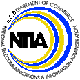

OPAD Fact Sheet
- OPAD develops policies promoting universal, available and affordable services to all Americans, and competition in telecommunications and information markets.
- OPAD makes policy recommendations to NTIA's administrator,
Larry Irving, in such areas as traditional common carrier telephony (e.g. regarding competition and
universal service); broadcasting and cable television; digital television (DTV); radio spectrum management and
wireless services (e.g., spectrum auctions); and information society technologies arising from the Internet and electronic commerce.
- Among other activities, OPAD drafts letters and formal comments for filing the
Federal Communications Commission (FCC), and analyses and testimony regarding pending legislation.
OPAD publishes occasional staff discussion papers, such as the 1998 staff paper
on Section 271 of the Telecommunications Act. The office has also planned and conducted public meetings to facilitate discussion of issues,
such as its 1997-1998 public policy forums.
- In 1997 & 1998, NTIA/OPAD supported the President's Committee on Public Interest Obligations of Digital Television Broadcasters (PIAC)
by hosting its Secretariat. PIAC, comprising 22 private sector representatives from the broadcasting, computer, public interest, labor and academic communities,
will recommend public interest responsibilities that should accompany the broadcasters' receipt of digital television licenses.
- NTIA's Minority Telecommunications Development Program (MTDP), works to increase minority ownership of broadcast and other telecommunication businesses.
MTDP offers a variety of services to support the development of economically viable minority-owned radio and television stations in the United States, and compiles statistics on minority-owned radio
and television stations. In addition, MTDP administers ComTrain, which provides broadcast management training for minorities and women who own or have authorization to build commercial radio and television stations.
last updated: July 23, 1999
Back to OPAD Home Page
 Staff Directory with e-mail addesses
Staff Directory with e-mail addesses